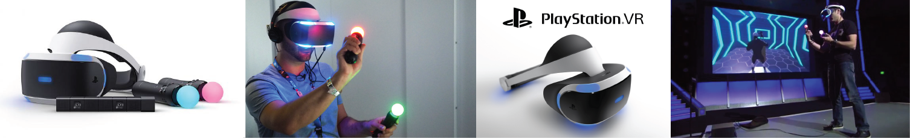

Virtual Reality Headsets
Virtual reality today has become such a buzz because of the new headsets that are coming out from major companies. Currently there are five competing headsets that are publically known.

HTC Vive
The HTC Vive is considered one of the highest ratest headset because of it’s high quality graphics and it’s view of vision. The price for this is around $800 but it includes all the features you would need in order to enter into vr.
Oculus Rift
Oculus Rift is another large contender. Oculus is owned by Facebook and has the same field of vision as well as high quality graphics as HTC, but Oculus has more availability in games, videos, and other entertainment qualities that other headsets do not have access to. The price for this would be around $880 and you would have to buy it in separate sections. Now both of these need to be on a computer in order for them to work and they need to be on high quality computers. So if you don’t have a $1000 computer rig, vr can get a little pricy.
Sony Playstation VR
Another vr headset is the Sony Playstation VR. It can connect to a playstation 4 and it will work, with select playstation games. The resolution quality is not as good as the pc versions and the field of range is limited as well, the price of this headset is almost half the cost at around $400.
Samsung Gear VR
Now if you want to go cheaper, Samsung Gear VR and Google cardboard are battling it out with phone vr. Samsung created a headset that connects with your samsung smartphone. Reviews have said that the quality is not the best and now a days, no one wants to buy a samsung phone, but at $100 you could enter vr if you’ve got a samsung phone
Google Cardboard
Google cardboard is lower than that. Now most people when they think of high tech, they would not think cardboard, but Google was thinking about availability for the masses. So they created a cardboard attachment with your phone that is $30. It is available for anyone who has a smartphone and the resolution depends on your phone.
VR Developments
Vr has also developed to the point where we have omni-directional treadmills and special gloves so you can interact in your virtual reality. But total immersion is getting closer and closer every day. Some setback to today’s vr is that humans have a 180 degree field of vision and right now the widest range of vision is 110. This would not help with anyone who has motion sickness. Since our five senses are not all engaged with virtual reality, people are more likely to get motion sickness but it’s developing everyday.
VR Applications
VR is not just limited to the headsets but also to our phones. One of the biggest ones that came out recently was Pokemon Go. It allowed you to interact with pokemon on screen with your surrounding environment. You could get a zubat in your room and be upset because it’s a zubat and not a dragonite. But it is that integration between technology and reality that is beginning to merge. But there are many other ones that have come to light. There are apps like HoloLens which can allow you to view the sky with constellations shown through the app, Snapchat where you can take photos and create real time illusions, and Inkhunter where you can create your own tattoo and view your tattoo on your skin through your phone to whatever size/shape you would want until you know exactly how you would want it. But there are many more out there that can still blow your mind and there is still more to come.